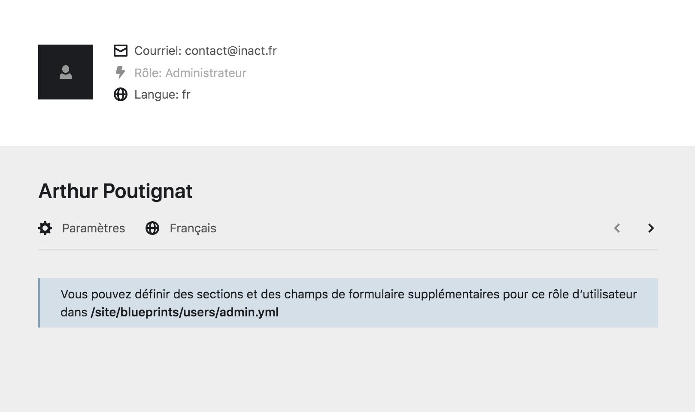
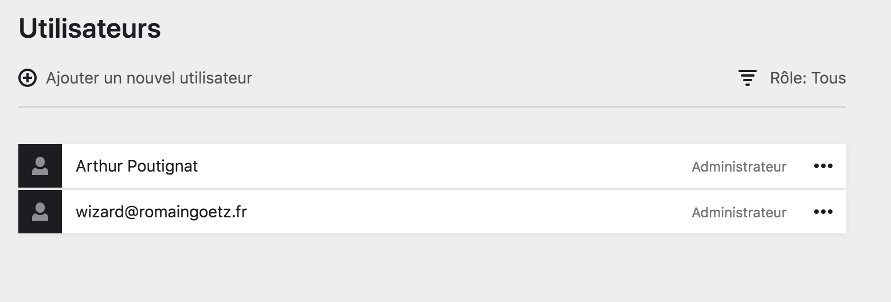

Les pages des utilistateur·ice·s #
Au sein du Panel, il est important de bien différencier la page Utilisateur, qui est la page personnelle de chaque utilisateur·ice du Panel, et la page Utilisateurs, qui regroupe l’ensemble des utilisateur·ice·s du Panel.
Page Utilisateur #
Chaque compte possède une page spécifique qui les est dédiée. Elle recense les informations de ce compte et permet de modifier ses informations.
Pour accéder à une page compte, allez sur le
hamburger du menu et cliquez sur le bouton votre compte.

Page Utilisateurs #
La page Utilisateurs regroupe tous les comptes utilistateur·ice·s que possède le site internet.
Vous pouvez accéder à des utilistateur·ice·s en particuliers, créer, modifier ou supprimer des comptes à partir de cette page. Pour vous y rendre, allez sur le
hamburger et cliquer sur le bouton utilisateurs.
